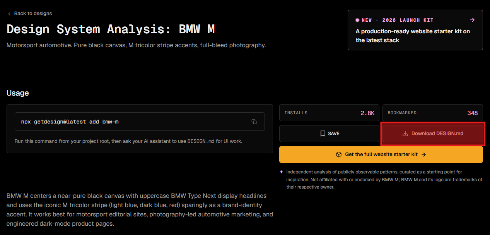
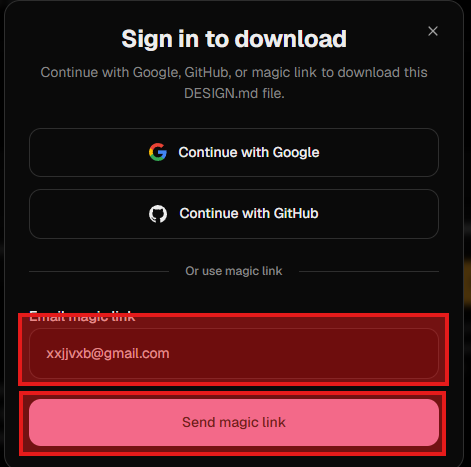

TIER 2 · 문서 자동생성
내용만 주면 — 진짜 문서가 나온다
📁
이번 단계 폴더 →
실습자료/02-보고서/
T1에서 만든 자기소개(또는 어떤 내용이든)를 PowerPoint·Word·PDF·엑셀로 바꿉니다. 코드도, 디자인 툴도 없이 — 말 한마디로. (대화가 바뀌어도 파일은 폴더에 그대로 — 그래서 파일 경로로 읽게 시키면 항상 통합니다.)
PPT발표자료
DOC보고서
PDF최종본
▶ 작업 폴더 전환 — 새 프로젝트 X
이제 02-보고서 폴더에서 작업할 거야. 프로젝트는 그대로 두고, 작업 컨텍스트만 이 폴더로 옮기는 거야.
💡 막막할 땐 — AI에게 청중·분량·톤을 먼저 묻게 시키세요. 그 답을 채우는 과정에서 보고서의 정체성이 내 손에 머뭅니다.
CATALOG · 만들 수 있는 문서
네 가지 — 실무 문서
PPTX
발표자료
내용을 슬라이드로.
DOCX
보고서
Word 문서로.
PDF
최종 배포본
그대로 공유.
XLSX
엑셀 표
수식·표 포함.
오늘은 PPT · Word · PDF를 직접 만들어 봅니다. 이게 가능한 이유는 — Cowork이 '스킬'이라는 미리 갖춰진 능력 묶음을 쓰기 때문. 우리는 내용만 주면 됩니다.
STEP 1 · 발표자료
자기소개를 — PPT로
① 물어봐 + 페이지 구성
01-자기소개/자기소개.html을 읽고 5장짜리 발표자료 만들 거야. 두 가지 부탁. 1) 청중·분량·톤·강조 메시지 — 필요한 정보 있으면 5개 이내로 먼저 물어봐. 2) 답 다 들으면 바로 PPT 만들지 말고 페이지 구성부터 짜 줘. 각 슬라이드 — 제목 / 핵심 메시지 한 줄 / 들어갈 내용 3~5개. 내가 OK 하면 그때 만들기.
② 구성 OK → PPT 생성
좋아, 위 구성대로 5장짜리 PowerPoint 만들어 줘. 02-보고서 폴더에 저장하고, 다 되면 열어서 보여 줘.
STEP 2 · 비판 보고서
방금 만든 PPT를 — 스스로 뜯어 보기
① 비판 항목 구성 먼저
방금 만든 자기소개 PPT를 비판적으로 뜯어 보는 Word 보고서를 만들 거야. 만들기 전에 — 어떤 항목으로 비판할지 4~6개 항목부터 짜 줘. (메시지 명확성, 청중 적합성, 약한 슬라이드, 빠진 내용, 매력도 등) 내가 OK 하면 그때 Word로.
② 구성 OK → 비판 보고서 작성
좋아, 위 항목대로 비판 보고서 Word로 만들어 줘. PPT 한 슬라이드씩 자세히 보고 — 각 항목마다 구체적 지적 + 개선 제안. 좋게 포장하지 말고 솔직하게. 02-보고서 폴더에 "PPT-비판보고서.docx"로 저장.
STEP 3 (1/2) · 브랜드 가이드 사이트
getdesign.md — 실제 회사 가이드를 가져오기
왜 이 사이트?
Stripe·Linear·Vercel·Figma·Notion 같은 실제 회사의 디자인 가이드를 .md 형식으로 모아 둔 곳. 한 사이트에서 톤이 다른 가이드를 비교해 볼 수 있고, 마음에 드는 걸 그대로 내 결과물에 입힐 수 있습니다.


브라우저로 직접 들어가 회사 하나 고르고, 그 가이드 .md 원문을 받아 02-보고서 폴더에 "브랜드가이드.md"로 저장해 두세요. 다음 슬라이드에서 이 파일을 Cowork이 읽어 톤을 입힙니다.
STEP 3 (2/2) · 가져와서 입히기
고른 회사의 톤을 — 내 결과물에
① 가이드 가져오기
앞에서 getdesign.md에서 받은 디자인 가이드 .md 파일을 02-보고서 폴더에 "브랜드가이드.md"로 넣어 뒀어. 그 파일을 읽고 — 어느 회사 가이드인지, 핵심 톤(색·폰트·분위기)이 뭔지 한 줄로 알려 줘. 다음 단계에서 이 톤을 내 결과물에 입힐 거야.
② 톤 적용 + PDF
방금 저장한 브랜드가이드.md를 읽고 — PPT랑 비판 보고서(Word)를 그 톤대로 통일해 줘. 색·폰트·표지 분위기까지. 그 다음 PPT는 PDF로도 내보내. 모두 02-보고서 폴더에.
CHALLENGE · 먼저 끝났다면
실무로 — 도전 과제
도전 과제
- ① 발표자 노트 자동 생성 — PPT 각 슬라이드에 발표할 때 말할 내용을 노트로 달기. "발표자 노트 달아 줘" 한 마디로.
- ② 영어 자료 → 엑셀 차트 —
02-보고서/영어-학습수입.txt를 한국어로 옮기고, 학력별 평균 연봉을 엑셀 파일(.xlsx)에 표 + 막대 차트로 정리. 차트는 엑셀 차트 객체로 (이미지 X).
결과물이 만족스러우면 — "채점해 줘".